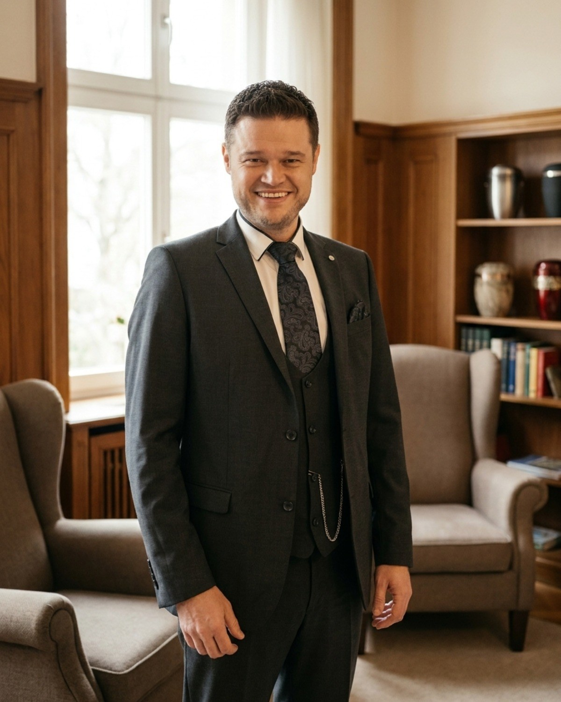

Unser Team
Fünf Menschen. Und ein Trauerhund.
Hinter Kaiser Bestattungen steht ein eingespieltes Team · und mit Maja eine vierbeinige gute Seele, die Trost spendet, wo Worte fehlen. Sie erreichen uns jederzeit unter 0951 30 12 55 81.
Ihr Bestatter
Verantwortung aus Berufung.
Sven Kaiser gründete sein Institut 2016 in Stegaurach · heute begleitet er mit seinem Team Familien in der Stadt und im Landkreis Bamberg. Angelika Kunze leitet das Büro und steht Ihnen als Bestatterin und Trauerrednerin zur Seite.



Wir sind erreichbar
Sie erreichen immer einen von uns.
Auch nachts, an Wochenenden und Feiertagen · Sie sprechen direkt mit uns, nicht mit einer Bandansage.
0951 30 12 55 81